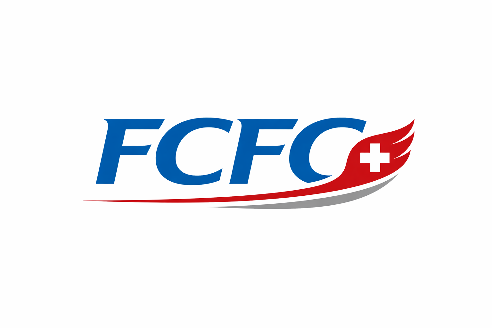

CTRM systems
We design and implement commodity trading & risk management systems from scratch, or fix ones that no longer fit how your desk actually trades.

FC Finance Consulting GmbHWe design and implement commodity trading & risk management systems from scratch, or fix ones that no longer fit how your desk actually trades.
From deal capture to settlement — we build the operational backbone that keeps physical and financial positions moving without breaking.
Regulatory reporting and compliance advisory for commodity trading operations, so audits don't become fire drills.
We open new markets and counterparties — structuring trade finance with banking partners, securing corporate accreditation with buyers, and coordinating the logistics that get a first shipment moving.
Twenty-plus years across physical and financial commodity trading operations — from vertically integrated supply chains to two commodity trading & risk management systems built from the ground up. We work close to the trade desk: operations, systems, and the regulatory reality around both.
Short, AI-assisted notes on commodity markets, trading technology, financing, logistics, and CTRM — refreshed automatically.